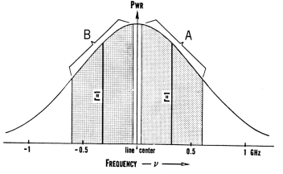

General Performance:
The Model 210 Ultra-Stable Laser operates on the same principles as the Model 200 and provides the same superior frequency stability and low noise that are characteristic of that model. Reference should be made to the Model 200 data sheets for further details. By virtue of circuitry and component changes the Model 210 does however provide several important additional features that make it indispensable for a number of applications. For example it can be tuned, with little sacrifice of frequency stability or noise level, over the extremely broad range of 1.2 GHz and still provide over this range more than 50% of the maximum single frequency power output. The features that enable this performance also make the Model 210 very useful as a secondary frequency standard, and as an optical power reference source of high stability both over the short and very long term.
Design Features:
Perhaps the most obvious difference between the Model 210 and 200 is the 10 turn helipot dial on the rear of the laser head. This dial controls the power ratio between the two orthogonally polarized modes normally operating in the plasma tube, or depending on the position of the mode switch, the ratio between the power in the vertically polarized mode and a reference power level. A second modification is the operating mode switch that lies beneath the black hole plug on the right side of the laser head. A third modification is the -/+ lock-slope switch located on the left side of the power control supply.
What is achieved by these modifications can be readily seen from the adjacent Doppler-broadened gain curve. When the mode switch is in the 'up' or frequency stabilizing position, the light frequency of the laser is precisely and repeatably controllable over a range of 600 MHz on either side of line center as shown by region A when the lock-slope switch is in the '+' position and by region B when the lock-slope switch is in the '-' position. The extremes for stable locking over both regions A and B are adjusted to require just slightly less than the full 10 turns of the ratio setting potentiometer.
|
|
The minimum stable frequency of region A and the maximum of region B can be made as little as 20 MHz so that this laser is tunable over virtually an entire 1.2 GHz bandwidth. It should be noted that the power output at the extremes of this frequency range are still approximately 60% of that near line center. The line positions shown at r=1 correspond to an equal power balance between the two orthogonally polarized modes (and a helipot setting of 5.00).
When the mode switch is in the 'down' or amplitude stabilizing position, long term frequency stability is given up for long term amplitude stability. The servo mechanism then serves to keep the vertically polarized component of the power output at a constant value that is determined by the ratio helipot, despite the affects of aging on the plasma tube.

Application Hints:
The Model 210 is an exceptionally versatile laser source for a very wide range of applications ranging from high precision wavemeters to various forms of differential interferometry. A measurement of wavelength made with the lock-slope switch in the '-' position averaged with one made in the '+' position provides to a high degree of reproducibility (1 part in 1010) a secondary standard of wavelength that corresponds to the Ne20 line center. Because of its broad tuning range, high stability, and low noise the Model 210 is also an excellent reference source with which other optical cavities can be scanned or to which they can be locked. In each of these applications it is important to take care of retroreflection problems. Refer to the Model 200 data sheets.
|